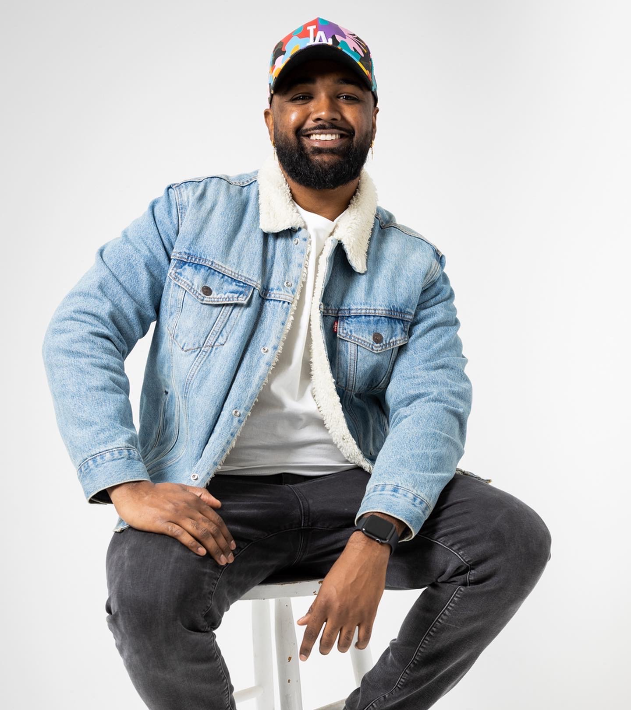

About Me
Recent graduate in Applied Computing with an emphasis in software sngineering. I am currently looking to expand my skill set and take on challenging projects within both Data Engeneering and Web Development. I am originally from Southern California but currently live in Arizona where heat is no stranger.
I have many hobbies and interest which include gym, gaming, manga, anime and coding of course! Always down to go outside and hike and sometimes take trips with my dogs to CA to hit the beach.